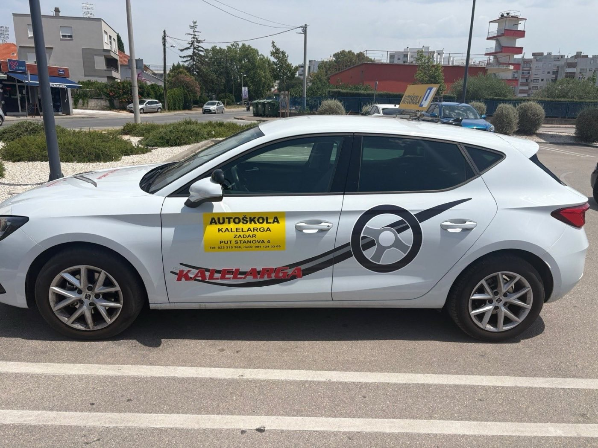
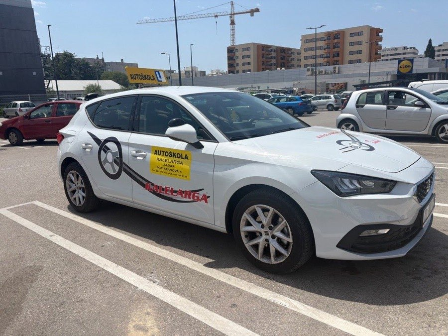
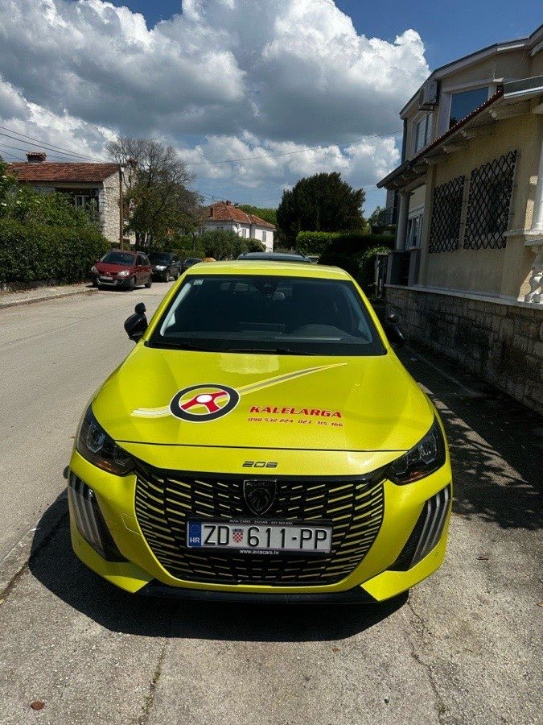
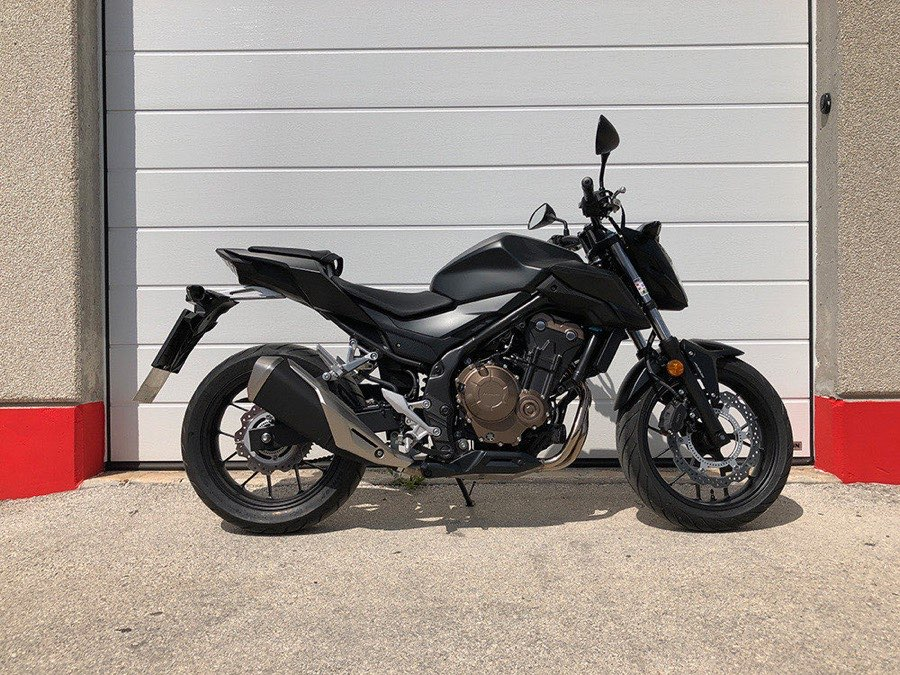
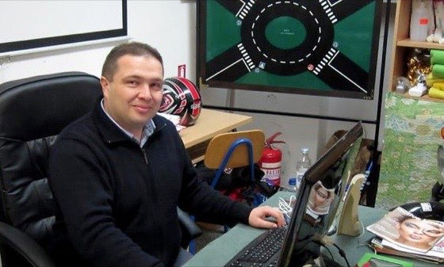

Mopedi
- Min. dob
- 15 god.
- Cijena
- na upit
Osposobljavamo kandidate za vozače AM, A1, A2, A i B kategorije – uz ubrzani tečaj za B, plaćanje na rate bez kamata i termine prilagođene vama.

Upisi i vožnje svaki radni dan, a nastavu slažemo prema vašem rasporedu – i ljeti.
Praktična nastava za B kategoriju odvozi se u 20 radnih dana.
Kartice bez kamata: Diners do 36 rata, Visa Premium do 24, OTP do 12.
Nastavu i obuku prilagođavamo vašim obvezama u školi ili na poslu.
Literaturu za učenje dobivate besplatno na korištenje.
Ispitne testove možete vježbati online ili u učionici.
Predavanja iz prve pomoći održavaju se u našim prostorijama.
Autoškola radi i tijekom cijelog ljeta.
Upisi i vožnje svaki radni dan, uz dobivanje blok-sata.
Osposobljavanje se može upisati najranije šest mjeseci prije nego što navršite godine propisane za kategoriju.
* Cijena za kandidate koji već imaju neku kategoriju (npr. A1 uz B kategoriju). Za A kategoriju dob od 20 godina vrijedi ako A2 imate najmanje 2 godine. Sve cijene s PDV-om – cijeli cjenik.
Za B kategoriju autoškola mora omogućiti završetak programa u roku od tri do najdulje šest mjeseci od početka osposobljavanja.
Potvrda liječnika opće prakse i pregled u medicini rada. Možemo vas naručiti.
Potpisujete ugovor o osposobljavanju i dobivate knjižicu kandidata.
Predavanja iz prometnih propisa i sigurnosnih pravila te prve pomoći.
Upravljanje vozilom s instruktorom – za B i ubrzano, u 20 radnih dana.
Autoškola prijavljuje ispit, HAK određuje mjesto, datum i vrijeme.
Šest automobila i šest motocikala – od Vespe od 50 cm³ do Yamahe MT-07. Svi automobili i motocikli →






Autoškolu vodi vlasnik Igor Vukojević, mag. ing. traff. Stručni voditelj i predavač prometnih propisa i sigurnosnih pravila je Marko Čanković, mag. ing. traff., a uz njih kandidate na cesti vodi još sedam instruktorica i instruktora vožnje.
Primjer jako dobrog poslovanja u kojem je sve podređeno onima koji pohađaju nastavu kako bi bili uspješni.
— Igor Lovrinov
Niste našli odgovor? Nazovite 023 315 366 ili pišite na WhatsApp, Viber, Facebook ili Instagram.
Prvo trebate liječničko uvjerenje. Kod svog liječnika opće prakse uzmite potvrdu, a s njom i osobnom iskaznicom idite na pregled u medicinu rada (u Zadru ih ima više, pregled je 50 €). Ako želite, mi vas možemo naručiti na liječničko da ne morate dugo čekati.
S uvjerenjem dođite k nama: potpisujete ugovor o osposobljavanju i dobivate knjižicu kandidata za vozača.
AM, A1, A2, A i B kategoriju. Uz to nudimo kondicionu vožnju, tj. vožnju za vozače bez iskustva koji već imaju vozačku dozvolu.
Ovisi o kategoriji. Za ispit iz vožnje plaćate ispitni sat za kategoriju koju polažete i naknadu HAK-u za ispitivače. Za testove i prvu pomoć plaćate samo naknadu HAK-u. Cijene osposobljavanja su u cjeniku.
Da. Školarinu možete platiti karticama bez kamata: Diners do 36 rata, Visa Premium do 24 rate i OTP do 12 rata. Gotovinom se plaća na blagajni autoškole ili uplatom na IBAN račun.
Ispite testova možete vježbati online ili u učionici, a testovi i prva pomoć polažu se u HAK-u. Predavanja iz prve pomoći održavaju se u prostorijama autoškole.
Možete. Termine predavanja prilagođavamo vama – ako idete u školu ili na posao, ili putujete javnim prijevozom.
Nalazimo se preko puta City Gallerije, odmah pored raskrižja – u neposrednoj blizini zadarskog prometnog vježbališta (Poligona).